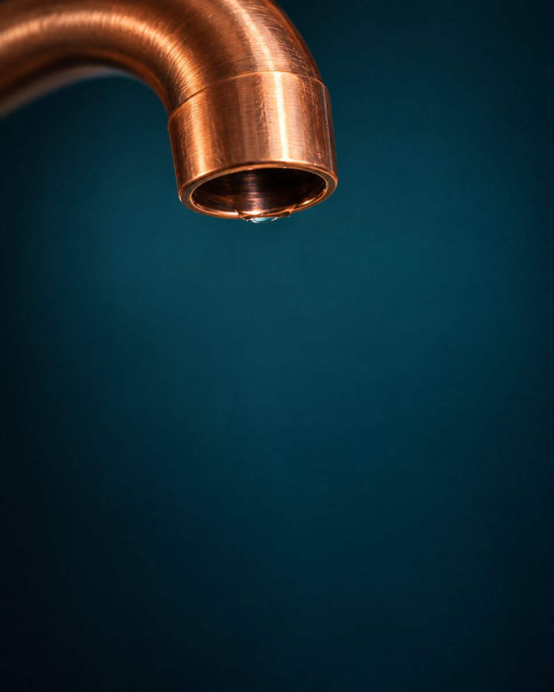
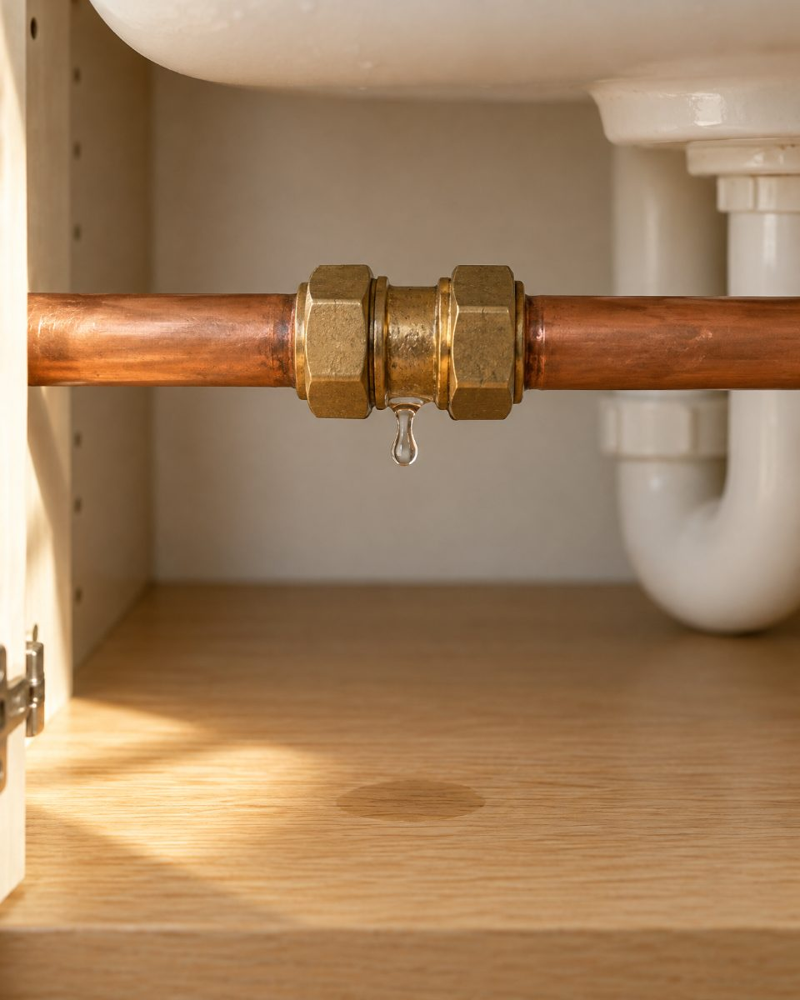
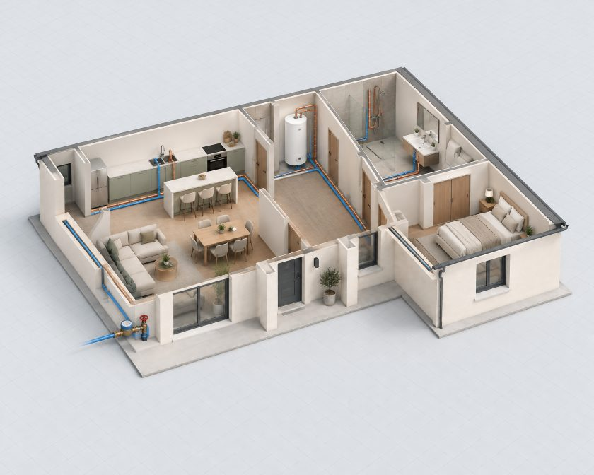
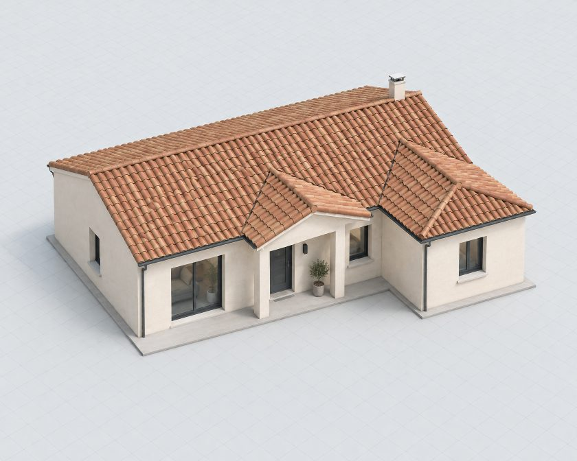
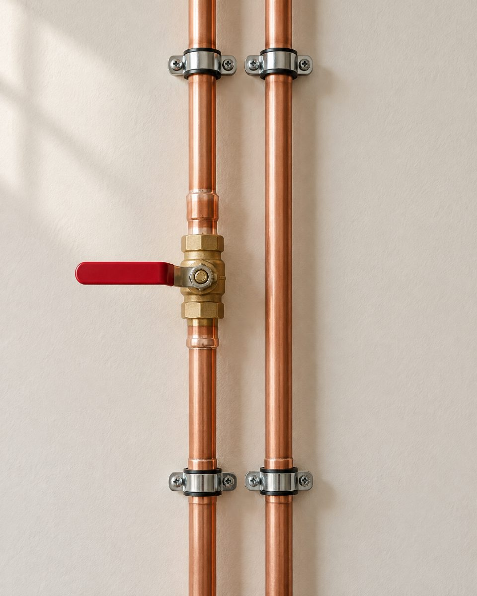

L’eau laisse toujours une trace.
Une goutte au mauvais endroit, une eau qui ne chauffe plus, une pièce à transformer. Suivez le fil : du premier signe chez vous jusqu’au bon geste du professionnel.

LE SIGNE
Tout commence par un signe.
Vous n’avez pas besoin de connaître le vocabulaire du métier. Dites ce que vous observez : le fil s’oriente vers la bonne partie de la maison.

CE QUE VOUS POUVEZ DÉCRIRE
Où l’eau apparaît-elle ?
Le lieu, depuis quand, et si la trace revient. Ces repères aident l’artisan à préparer son passage ; ils ne remplacent pas sa vérification sur place.
LE RÉSEAU
Derrière les murs, le chemin de l’eau.
- La maison telle que vous la voyez. Façade, pièces, équipements : tout semble calme.
- Les murs s’effacent. L’eau froide arrive au compteur et se partage entre la cuisine, le chauffe-eau et la salle d’eau.
- Pièce par pièce. Touchez une pièce pour voir ce que l’artisan vérifie quand il intervient.
CE QUE L’ARTISAN VÉRIFIE
Choisissez une pièce. Les points vérifiés sont indicatifs : le diagnostic se fait toujours sur place.


Eau froide · tubes bleusEau chaude · tubes cuivreIllustration générée · indicative
LE GESTE JUSTE
Comprendre. Se parler. Agir juste.
Le savoir-faire se joue sur place. Avant cela, quelques mots suffisent pour que l’artisan arrive préparé.
- 01
Vous décrivez le signe
Un détail, un bruit, une pièce : quelques mots suffisent pour commencer.
- 02
L’artisan écoute et vérifie
Il précise le besoin avec vous. La situation se vérifie sur place si nécessaire.
- 03
La suite se décide ensemble
Intervention, devis ou rendez-vous : la proposition dépend du cas réel.

ON EN PARLE
Le premier geste est une conversation.
Démonstration fictive : le téléphone, la zone d’intervention et les modalités de réponse seront configurés avec l’artisan avant toute mise en ligne.
FICHE CONTACT · DÉMO À CONFIGURER
- Téléphone
- À configurer avec l’artisan
- Zone d’intervention
- À définir
- Délai de réponse
- À confirmer
- Urgence et astreinte
- À configurer
URGENCE · DÉGÂT DES EAUX
Coupez l’eau à la vanne près du compteur, puis appelez : l’artisan vous guide au téléphone.